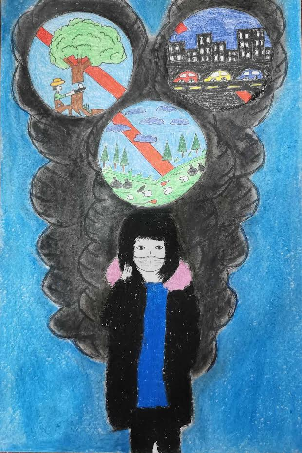

SOUL ART
Zarate, Kurt Russel B.
Marcella, Justine S.

Quiambao, Kyrone Khim S.

Arcilla, EJ D.

De Castro, Marwen C.
In this soul making art, there is a human figure that symbolizes humanity. With one hand on each lung, one with beautiful landscapes and the other filled with pollution. The figure embodies our power to influence the balance between purity and pollution. This artwork urges us to reflect on the choices made by our society and industry. It serves as a reminder that the quality of the air we share mirrors the choices we make as individuals and as a community. Through this art, we are compelled to take action, champion clean air, support sustainable industrial practices, and assume the role of guardians over both our lungs and the lungs of our Earth.
Dela Peña, Michael S.
I drew this to illustrate how factory buildings contribute to air pollution due to the release of chemicals into the air, which have negative effects on health and can further contribute to air pollution.
Fernandez, Kristofer Cyle
Air pollution is a mix of hazardous substances from both human-made and natural sources. This drawing represents death, as being exposed to and breathing air that has already been polluted is so dangerous, especially to us humans, as it can cause a variety of adverse health outcomes, and also, when the polluted air enters our bloodstream, it can cause or even worsen numerous breathing as well as lung problems that may end up in hospitalization or even death.
Galang, Princess C.
This is my illustration because the issues it depicts are those which contribute to air pollution. Due to situations like tree cutting, the woman is shown in this drawing with a mask on and is surrounded by smoke, because the air in the area is lost as a result of tree cutting. Second is the vehicles with a lot of smoke coming out of the exhaust because the engine hasn't been cleaned or inspected. Lastly, the dumping of waste, which resulted in flooding in nearby areas and the foul smell of trash dumps.
Mones, John Vladimir L.

This drawing symbolize that we should stop burning fuels because burning fuels like coal,oil and gas results in carbon pollution.Particles of carbon black can irritate the lungs and make you cough. Additionally irritating to the eyes, nose, and throat is carbon black. Particles of carbon black may become deeply embedded in people's lungs after years of exposure to high amounts of the substance.
Moral, Justine Carlo
The drawing describes a car with toxic smoke from its exhaust, displays one of the signs of air pollution. As the gas and chemicals from the car smoke it will mix with the air that will have a impact to the environment and human health, resulting in air pollution. Long exposure to the smoke can cause bad conditions in respiratory like asthma, shortness of breath, coughing and wheezing. In the environment, smoke can contribute to global warming and climate climate that can also impact the people.
Romero, Jhennser R.
This drawing, symbolize that one of the things that make people sick when it is inhaled. just like in the art it indicates the pollution and the released oil, the released oil affects the sea just like the fish that we usually eat. This also affects our nature, especially the trees, because the pollution it emits has chemicals, so many people are sick because of it.